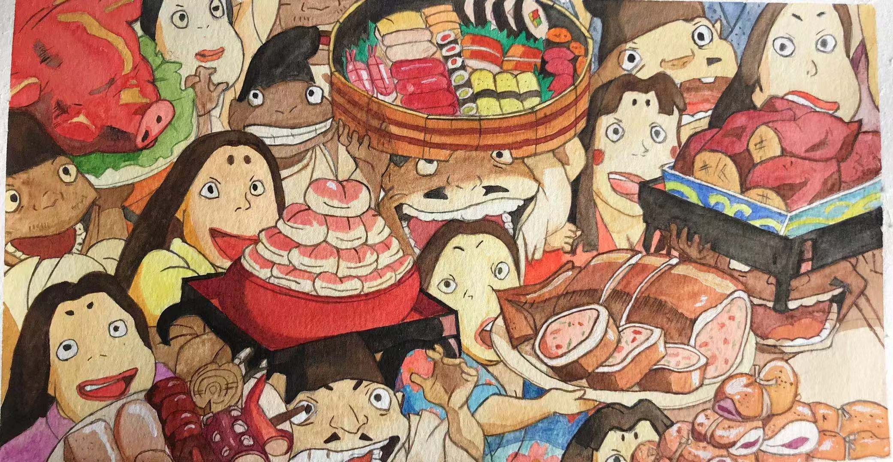
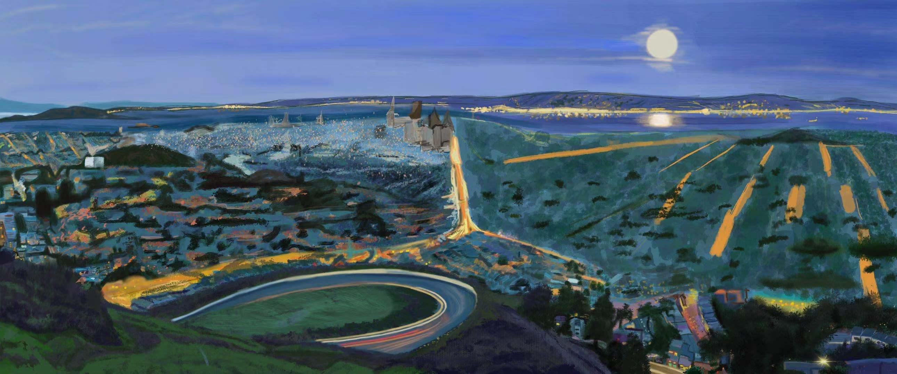
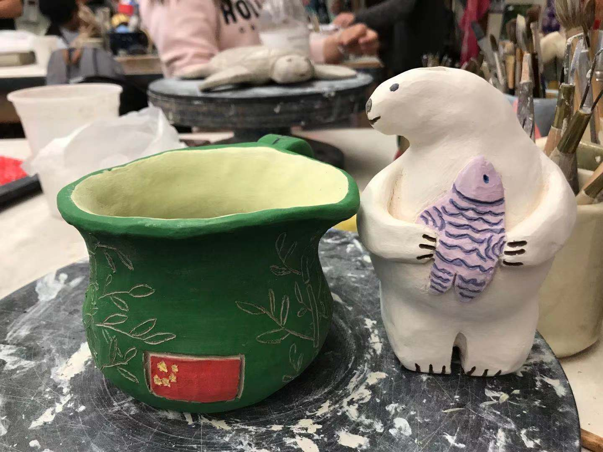
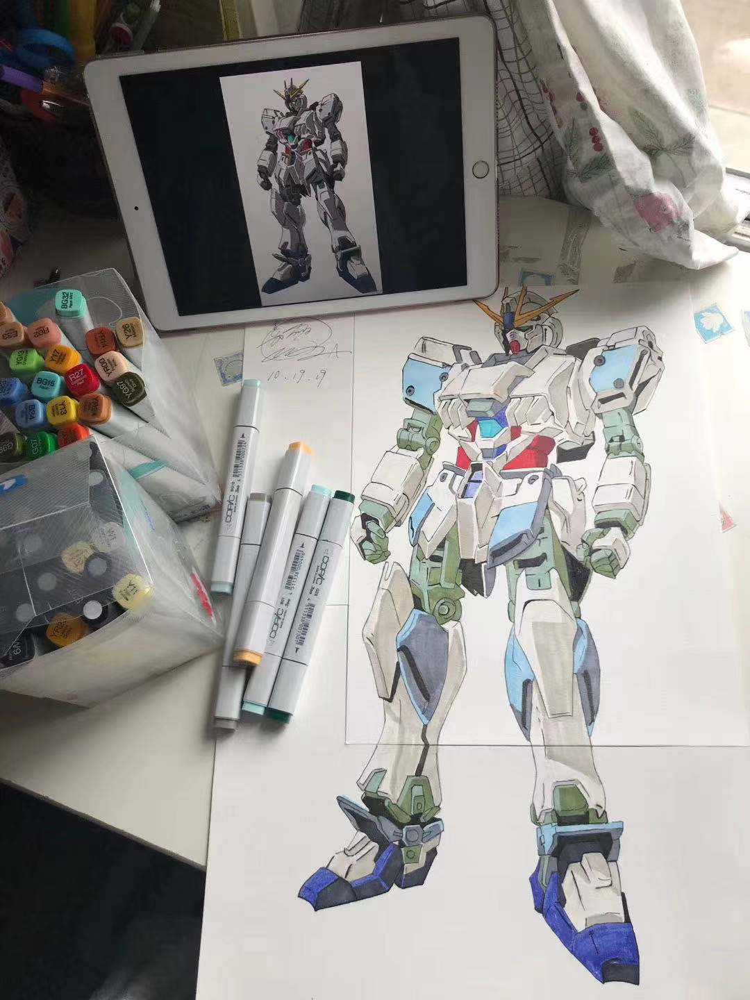

Home page | Photoshop | illustrator | Animate | Artwork | Social contact




I learned Adobe digital artwork started this year, before that, I was doing a lot of paper artwork. I do like to draw on the paper and paint on the paper too because I like to mix color with the water. Therefore, I tried to use watercolor, marker, and the ceramics work. I hope you guys would like my drawing.